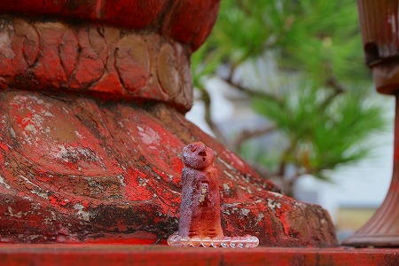

愛知県の知多半島に点在する
知多八十八ヶ所霊場。
四国八十八ヶ所の写し霊場として香川県の小豆島八十八ヶ所霊場、福岡県篠栗町の篠栗四国八十八ヶ所と並んで日本三大四国写し霊場としてその名を馳せている。
当サイトでも過去にいくつかの知多四国霊場の札所を紹介してきたのでご存知の方も多かろう。
そんな知多四国の霊場を調べていたある日、
愛知札所巡りというサイトの画像を眺めていた。
すると妙なことに気がついた。
知多四国の何ヶ所かの札所のお寺に
妙なコンクリの仏像があるじゃないか…。
しかもかなり珍妙というか独特というか、うーん、ザックリ言っちゃうと下手なんですな！
でもその姿は何ともキュートで、コンクリ仏としての魅力に溢れてまくっているのだ。
これは一回じっくり訪問するしかない。
そう思って知多四国霊場へと赴いたのである。
で、最初に訪れたのがこちらのお寺。
境内の一画に石の台座で高く持ち上げられた観音像が見える。
コレが
来迎観音と呼ばれるコンクリの観音サマである。
かつては金色に輝いていたであろう観音像だが、今は塗装が剥がれかかり、下地の赤い色が見えてしまっている。
徳利を持ってご機嫌なお姿…なんだと思う。
実際に見てみると、やはり彫像としての「出来」はあまりよろしくない。
しかし私は
この激ユルな表情に一発で惚れ込んでしまったのだ！
これはユルい、ユル過ぎる！
私も日本中、世界中のコンクリ仏を見て来たが、これだけユルいコンクリ仏は久々だ。
しかも立派な台座の上に置かれているじゃないか。
仮にも知多四国八十八ヶ所霊場の札所のお寺の庭に、ですよ。
何なんだろう、この厚遇っぷり。
台座に銘が刻まれていた。
作者は
平山さんという方で平成5年に建立されたことが判明した。
平山さん88才の作だとか。ということは、今存命であれば108才ということになる。
存命は…されてないだろうなあ…。
両サイドにある蓮の葉のつくりものも憶えておいていただきたい
台座の下は納骨堂のような位牌堂のような感じ。
天井を見上げると観音サマの台座の部分だけが天井が刳り貫かれていた。
修復中、なのだろうか。
正体が全く判らないまま知多まで来たものの、とりあえず作者とおおよその製作時期だけは判明した。
スタートとしては上々ではないか！
次に向かったのは札所の中でも比較的小さなお寺。
境内の駐車場近くにあった観音像がターゲットだ。

こちらの
みたけ観音も同じ平山さんの手によるもの。
三角形の鼻や
スクラッチしただけの目などが特徴的だ。
目鼻は兎も角、口周りの造型は比較的しっかりしているように思える。
何かよーく見てると石田依良っぽくないすか？（石田依良ファンの方スミマセン！）
印相もアバウト。
右手に持つ徳利が牛乳瓶っぽいのはご愛嬌か。
何ともアンニュイな後姿である。
どっちかというと砲弾みたいだ。
台座にプレートを発見。
やはり平山氏のもので83才の作。
つまり先の作品よりも5年も前に作られたモノということ。
はてさて。
5年経ってコンクリ仏師としての腕は上達したんでしょうか？

足元には小さなお地蔵さんがいた。
二体目にして早くも平山氏作の仏像、略して
平山仏の虜になりつつある私。
次の平山仏を求めて次の寺へと向かうのであった。
次は半島部にぐっと入り込んだお寺。
こちらにも
素敵過ぎる平山仏が鎮座している。
しかも2体！
正面から見て左側が
千手観音、右側が
聖観音なのだそうです。
どちらも
びっくりする位のタレ目、三角の鼻、平山仏の特徴が遺憾なく発揮されまくり。
平山氏85才の作。
今のところ80才代の仏像ばかりだ。
恐らくある程度の年齢になってから仏像作りを始めたのだろう。
一体平山氏に何があったのだろう。
疑問と興味は尽きないのであった。
特に壮絶だったのが千手観音。
一体どこから手が生えてるんだ！
…と思わず叫びそうになるほど
不思議な位置に手がある。
合掌しているメインの手の肘付近からニョキニョキ生えている。

手というより植物に近い感覚だ。
こういう仏像見てるとコンクリの仏像って面白いなあ、と改めて思う。
例えば石彫とか木彫って最初から完成形が決まっていて、そこに向かって作るじゃない。
ところがコンクリ仏は
作っているうちに予定を変えてどんどん足していくことが出来るのだ。
だからある程度塑像を作っている途中でも
気分が盛り上がってきたら手を増やしちゃえ！とか出来るのだ。
いや、この千手観音がそうだとは言わないが、その辺の制作上のユルさというかアバウトさを感じるのだ。
結論として、この千手観音は
平山仏の最高傑作だと思う。
お次も小さな札所。
さて、平山仏はどこにあるでしょう？
正解は本堂の左。
ことぶき観音
昭和63年、平山さん82才の作である。
そこだけ塗り替えたのであろうか、緑色の台座がまぶしい。
これまた平山仏独特の表情、プロポーションである。
見ているだけで全身の力がゆるゆると抜けていく。ああ、たまらん。
合掌した腕も妙に反り返っている。
軒先にたたずむ観音サマ。
その姿は本堂に収まっている観音サマとは違い威厳はないが、親しみやすく細々とした願い事や愚痴を聞いてくれそうだ。
その際、
この造型のユルさは最大の武器となる。
敷居の低い仏像を作るにあたってコンクリほど適した素材はないのではなかろうか。
このストーンとした後姿も何ともいえないなあ。
最後に訪問したのは海に程近いお寺。
ココには
魚霊観音という観音サマがいらっしゃった。
赤い台座、蓮華座、砲弾のようなシルエット、そして三角の鼻。
平山印満載の観音サマである。
魚の入った籠を持つ観音サマは一般的に魚籃観音と呼ばれているがここのは魚霊観音。
いずれにせよ港に程近いお寺には似つかわしい観音サマではないか。
安定のユルい表情。
籠の中には魚が入っていた。
恵比寿像や貝細工などが並び足元が何やらにぎやかだ。
左右に備えられた蓮の葉も平山仏における定番アイテムだ。
茎はコンクリではなく鉄筋で出来ているので緩やかなカーブ加工が可能だ。
コンクリ製のタコなどもいた。
そういえば知多半島の先にある日間賀島はタコ漁が有名なんだっけ。
コレは…鯛…なのか？
これにて平山仏巡礼の旅は終了。
まだ他にもあるかもしれないなあ。ご存知の方は是非教えて下さい！
ちなみにどのお寺さんもこの平山仏に関しては何となく苦笑い。
まあ、せっかく奉納してくれたものだから置いておくけどそれ以上は聞いてくれないでよー、的な扱いだったのが印象的だった。
お気持ち、察しますとも。
さて。
旅の締めくくりに
平山さんの自宅に行ってみた。
何ヶ所かの観音像の台座に思いっきり住所が刻まれていたのだ。
平山さんのご遺族にお話を聞くことが出来た。
曰く、平山さんは左官職人で、
引退後に手なぐさみとして仏像を作り始めたのだとか。
今は亡くなってしまったのでどこのお寺に何を奉納したのかは判らないようだ。
なるほど。それで80才代のものばかりだったのだな。
仕事場の外壁には平山さんが手がけた擬木（コンクリートで作った丸太）が並んでいた。
玄関脇には平山さん作のたぬき。
コレを見る限り、絶望的に下手な訳ではなさそうだ。
やはり仏像を作るのは相当難しいのかなあ。
参照サイト；
愛知札所巡り
このサイトは愛知県のお寺、特に知多四国を調べる際に凄く参考にさせていただいてます。
その情報量は本当に凄い。リスペクトします！